---
# You don't need to edit this file, it's empty on purpose.
# Edit theme's home layout instead if you wanna make some changes
# See: https://jekyllrb.com/docs/themes/#overriding-theme-defaults
title: " "
layout: splash
date: 2012-03-23T11:48:41-04:00
---




IN PROGRESS!!!
